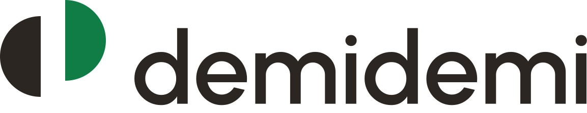

Canvas des écrans de la V1, dans l'ordre du parcours, à taille réelle (iPhone 393 × 852 pt). Chaque écran existe en anglais (US) puis en français. Les prototypes en tête montrent les six moments animés ; « Rejouer » relance chacun.
Ressorts sans rebond partout, un seul dépassement : la pose du brin. Avec « Réduire les animations », chaque prototype devient un fondu.
Mêmes rôles, fond fonte. Le brin garde son safran, plus lumineux.